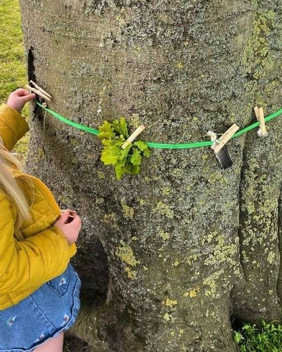

Om mig
Jeg hedder Jeanette
Jeg er 39 år, har været mor i 17 år, og har haft privat pasningsordning siden 2015.

De første 36 måneder kommer ikke igen
Det er i de år, hjernen udvikler sig hurtigere end på noget andet tidspunkt i livet, og det er i de år, et barn lægger grunden for tryghed, tillid og selvværd – ofte uden at vi voksne lægger mærke til, hvor meget der egentlig sker.
Vi lever i en tid, hvor de fleste har travlt. Hvor en skærm nemt bliver den, der holder styr på et barn, mens de voksne når det hele. Jeg tror på noget andet: at et barn har mest gavn af en voksen, der er til stede – og af selv at være en del af det, der sker, i stedet for kun at kigge på.
Derfor tager jeg børnene med, når der skal fodres dyr, bages brød eller ordnes ting i haven. Ikke fordi det er en aktivitet, men fordi et barn, der får lov at bidrage til noget rigtigt, mærker sig selv som en del af et fællesskab – og bygger en selvtillid, der sidder dybere end ros nogensinde kan give.
Roen låner de af den voksne
Jeg har brugt mange timer på at forstå, hvordan et lille barns hjerne og følelser udvikler sig i de første leveår. Et lille barn kan endnu ikke berolige sig selv i en svær følelse – det låner roen fra den voksne, det er sammen med. Når jeg selv er rolig, smitter det: et barns gråd, vrede eller frustration kan finde et sted at lande, fordi der er en tryg voksen at læne sig op ad.
Det er den viden, jeg tager med ind i mødet med de mindste, hver eneste dag.
Men I finder mig med gummistøvlerne på
Lige så vigtigt er det, at I finder mig med gummistøvlerne på midt i det hele. Jeg hopper selv i vandpytterne, graver med i mudderet, og sætter mig på gyngen, hvis der er brug for et skub eller to. For mig er rigtig leg noget, man er en del af, ikke noget, man kun står ved siden af og kigger på.
Derfor er den så vigtig.
Kom forbi og se stedet
Ring, så aftaler vi et tidspunkt, hvor I kan komme og hilse på – både på mig, på huset og på dyrene.